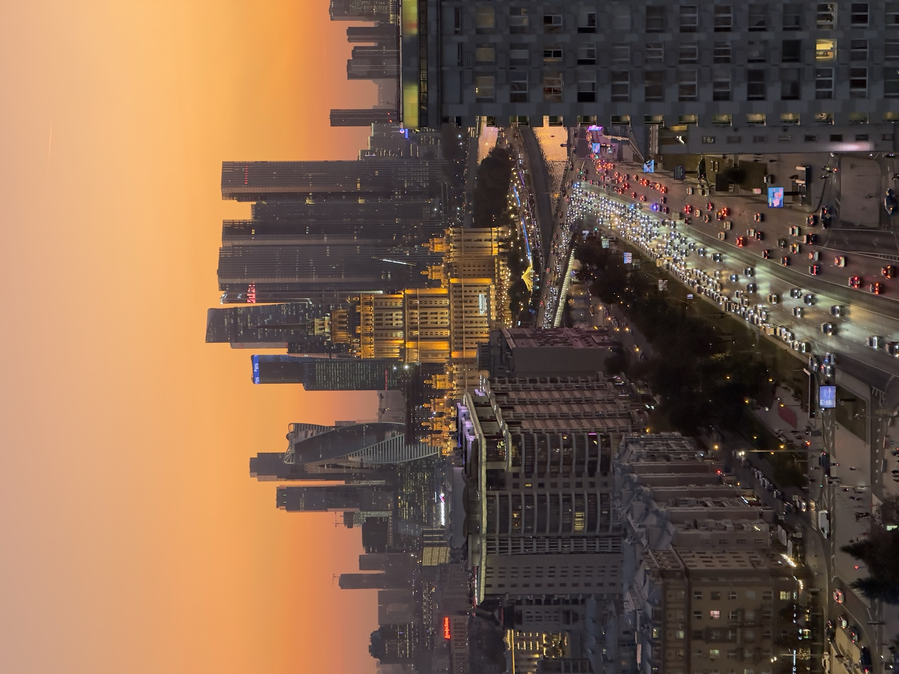

Golden hour
Закаты на крышах Москвы
Когда город становится мягче, окна отражают небо, а Москва-Сити и высотки собираются в один кинематографичный кадр.
Почему стоит идти на закате
Закат меняет город: крыши становятся спокойнее, свет теплее, а фотографии выглядят дороже без сложной постановки. Это хороший формат для пары, туристов, друзей и короткой съемки.
Что учесть
- закат зависит от погоды и сезона;
- при облачности прогулка все равно может быть атмосферной;
- лучше приходить вовремя, чтобы не потерять красивый свет;
- для больших компаний детали согласуются заранее.
Отзывы
Реальные впечатления и живые кадры можно смотреть в Instagram @ilya.melyakin.
FAQ
Про закаты
Гарантирован ли красивый закат?
Нет, погода всегда влияет на свет. Но даже облачный вечер на крыше может быть очень атмосферным.
Можно ли прийти на свидание?
Да, вечерний формат особенно хорошо подходит для свиданий.
Можно продлить прогулку?
При возможности да: 500 руб. за человека за дополнительный час.
Закатный слот